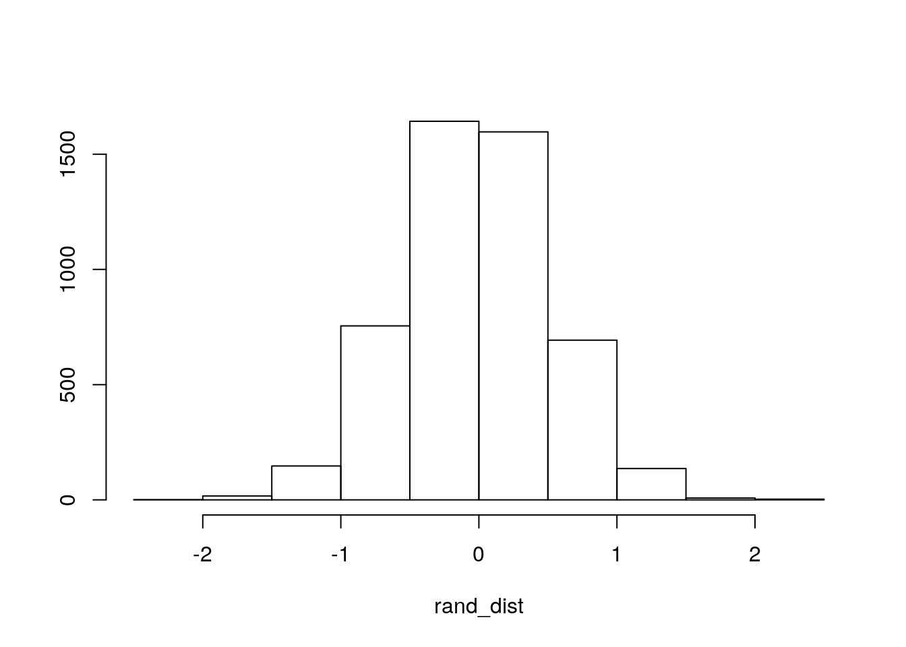
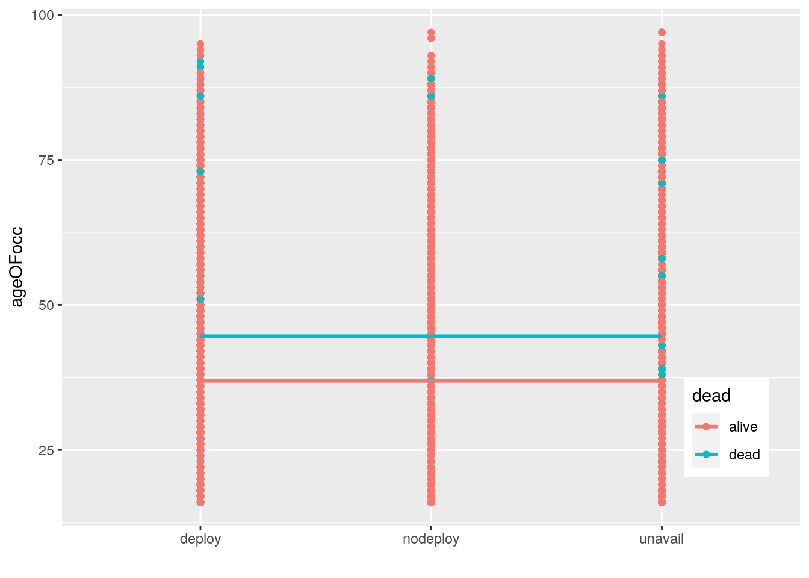
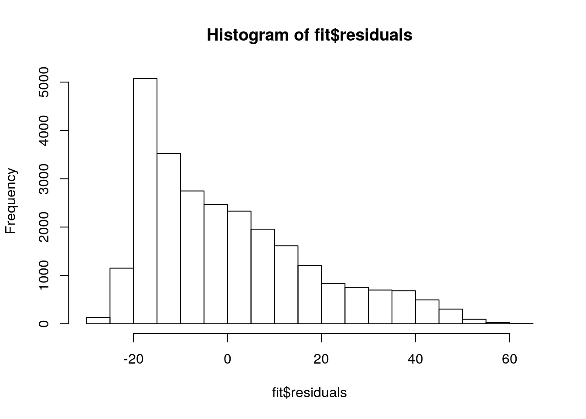
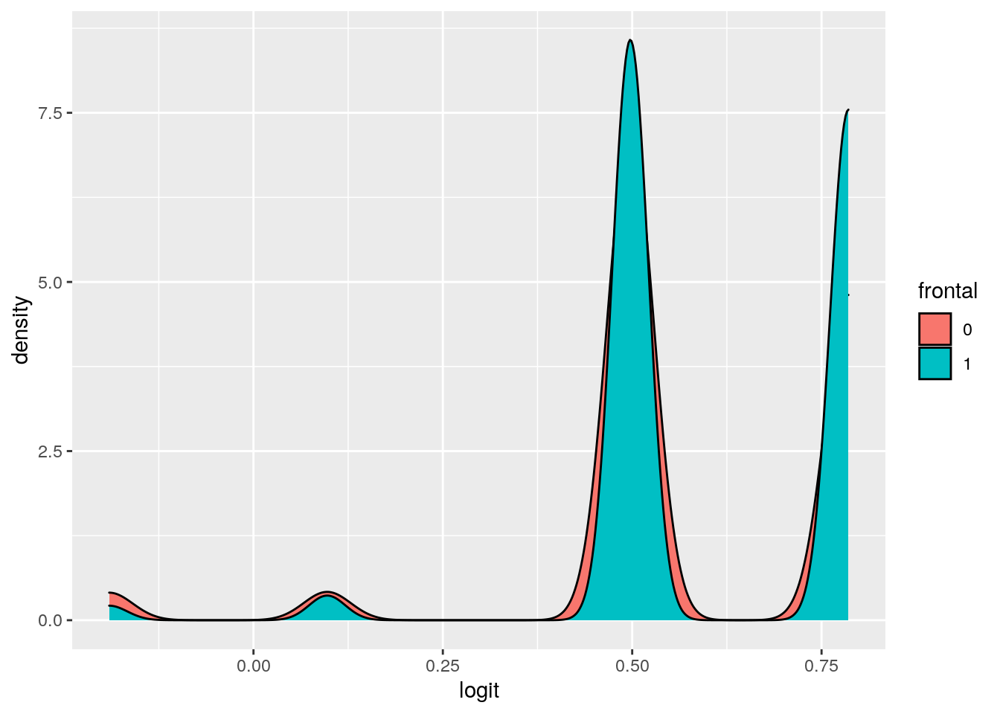

May 7, 2021
Mia Soto eid:mis696
Introduction This data set contains data from car crashes. There are 15 variables in this data set with 26,217 observations, and I will discuss the most notable variables. The first notable variable is a categorical variable called dead that classifies the victim of the crash as alive or dead. Two other important variables are airbag and seatbelt, which are two categorical variables with the option none or airbag/belted, respectively. Another variable is called frontal and is a binary variable, with the options 0 for non-frontal and 1 for frontal impact. The victims are also classified by sex, either f for female or m for male. The age of the victim is shown as the numeric variable, ageOFocc, with 82 distinct values. The year of the accident is also provided as the numeric variable, yearacc, with 6 distinct values. The year of the model of the car that was in the accident is a numeric variable with 46 distinct values, shown as the variable yearVeh. The deploy variable shows a binary value, 0 for no airbags or unavailable and 1 for deployed airbags. The last important variable shows severity of injury as a variable called injSeverity with 7 distinct numeric variables representing a range of injury from none, possible injury, no incapacity, incapacity, killed, unknown, or prior death.
MANOVA:
# assumptions:
library(mvtnorm)
library(ggExtra)
library(dplyr)
library(ggplot2)
library(rstatix)
library(tidyverse)
# test for multivariate normality for a shorter
# dataset
car <- read_csv("car.csv")
car1 <- car %>% na.omit
carshort <- head(car1, 5000)
group1 <- carshort$abcat
DVnew <- carshort %>% select(ageOFocc, yearacc, yearVeh,
injSeverity)
sapply(split(DVnew, group1), mshapiro_test)## deploy nodeploy unavail
## statistic 0.9718324 0.9715628 0.9384994
## p.value 1.287312e-15 4.811237e-11 5.60424e-33# homogeneity test for a shorter dataset
box_m(DVnew, group1)## # A tibble: 1 x 4
## statistic p.value parameter method
## <dbl> <dbl> <dbl> <chr>
## 1 1475. 7.77e-301 20 Box's M-test for Homogeneity of Covariance Matr…# MANOVA test
man1 <- manova(cbind(ageOFocc, yearacc, yearVeh, injSeverity) ~
abcat, data = car1)
summary(man1)## Df Pillai approx F num Df den Df Pr(>F)
## abcat 2 0.59438 2754.7 8 52116 < 2.2e-16 ***
## Residuals 26060
## ---
## Signif. codes: 0 '***' 0.001 '**' 0.01 '*' 0.05 '.' 0.1 ' ' 1# ANOVA
summary.aov(man1)## Response ageOFocc :
## Df Sum Sq Mean Sq F value Pr(>F)
## abcat 2 26805 13402.5 41.947 < 2.2e-16 ***
## Residuals 26060 8326409 319.5
## ---
## Signif. codes: 0 '***' 0.001 '**' 0.01 '*' 0.05 '.' 0.1 ' ' 1
##
## Response yearacc :
## Df Sum Sq Mean Sq F value Pr(>F)
## abcat 2 3093 1546.61 556.6 < 2.2e-16 ***
## Residuals 26060 72413 2.78
## ---
## Signif. codes: 0 '***' 0.001 '**' 0.01 '*' 0.05 '.' 0.1 ' ' 1
##
## Response yearVeh :
## Df Sum Sq Mean Sq F value Pr(>F)
## abcat 2 462368 231184 17095 < 2.2e-16 ***
## Residuals 26060 352415 14
## ---
## Signif. codes: 0 '***' 0.001 '**' 0.01 '*' 0.05 '.' 0.1 ' ' 1
##
## Response injSeverity :
## Df Sum Sq Mean Sq F value Pr(>F)
## abcat 2 1248 624.18 384.12 < 2.2e-16 ***
## Residuals 26060 42346 1.62
## ---
## Signif. codes: 0 '***' 0.001 '**' 0.01 '*' 0.05 '.' 0.1 ' ' 1# T-Tests
pairwise.t.test(car1$ageOFocc, car1$abcat, p.adj = "none")##
## Pairwise comparisons using t tests with pooled SD
##
## data: car1$ageOFocc and car1$abcat
##
## deploy nodeploy
## nodeploy 6.8e-07 -
## unavail 8.3e-06 < 2e-16
##
## P value adjustment method: nonepairwise.t.test(car1$yearacc, car1$abcat, p.adj = "none")##
## Pairwise comparisons using t tests with pooled SD
##
## data: car1$yearacc and car1$abcat
##
## deploy nodeploy
## nodeploy 0.042 -
## unavail <2e-16 <2e-16
##
## P value adjustment method: nonepairwise.t.test(car1$yearVeh, car1$abcat, p.adj = "none")##
## Pairwise comparisons using t tests with pooled SD
##
## data: car1$yearVeh and car1$abcat
##
## deploy nodeploy
## nodeploy 0.24 -
## unavail <2e-16 <2e-16
##
## P value adjustment method: nonepairwise.t.test(car1$injSeverity, car1$abcat, p.adj = "none")##
## Pairwise comparisons using t tests with pooled SD
##
## data: car1$injSeverity and car1$abcat
##
## deploy nodeploy
## nodeploy <2e-16 -
## unavail 0.86 <2e-16
##
## P value adjustment method: none# Number Tests, Probability of Type I error and
# Bonferroni Correction
12 + 1 + 4## [1] 170.05/17## [1] 0.0029411761 - (0.95^17)## [1] 0.5818797The categorical variable, abcat, which categorizes whether the airbag was deployed, not deployed, or unavailable was tested against 5 relevant numeric variables ageOFocc, yearacc, yearVeh, and injSeverity. The null hypothesis for the MANOVA test was that for all the numeric variables used, there was not difference in mean between the categorical groups. The alternative hypothesis was that for at least one numeric variable the means differed between the categorical groups. The assumptions of multivariate normality and homogeneity were tested using a shorter data set for simplicity. These tests both showed a p-value less than 0.05 meaning the assumptions for the data set were not met. The MANOVA test showed a p-value way less than 0.05 meaning that I reject the null hypothesis and there was a difference in means for at least one of the numeric variables across the categorical grouping. Then an ANOVA test was done on each variable all showing a p-value of less than 0.05 meaning that each variable shows a mean difference across groups and I can reject the null hypothesis. Then a t-test was done for each variable to find exactly which groups differ from one another for each numeric variable.The ageOFocc variable also showed a p-value of less than 0.0.0029 for each group and therefore it can be concluded that the mean age for each categorical group is vastly different from one another and the null hypothesis can be rejected. The yearacc variable showed a p-value less than 0.0.0029 only between the deploy and unavail and nodeploy and unavail which means the means for yearacc for these groups are very different from one another and the null hypothesis can be rejected, the yearVeh variable showed this same pattern. The injSeverity variable showed a p-value less than 0.0029 between the deploy and nodeploy groups and the nodeploy and unavail groups. This means that the means for these two groups are different and I can reject the null hypothesis for these groups. One MANOVA, 4 ANOVA’s, and 12 post-hoc t-tests were performed. Therefore, 17 total tests were performed. The probability of at least one type 1 error occurring is 0.582. The bonferroni correction is 0.0029 and this was used when making conclusions about the t-tests
Randomization Test:
car1 %>% group_by(dead) %>% summarize(means = mean(ageOFocc)) %>%
summarize(mean_diff = diff(means))## # A tibble: 1 x 1
## mean_diff
## <dbl>
## 1 7.74rand_dist <- vector()
for (i in 1:5000) {
new <- data.frame(age = sample(car1$ageOFocc),
condition = car1$dead)
rand_dist[i] <- mean(new[new$condition == "dead",
]$age) - mean(new[new$condition == "alive",
]$age)
}
mean(rand_dist > 7.74249 | rand_dist < -7.74249)## [1] 0{
hist(rand_dist, main = "", ylab = "")
abline(v = c(-7.74249, 7.74249), col = "red")
} A randomization test was performed between age of the occupant and the alive or dead status. The mean difference between the alive and dead groups was 7.74249 years before the randomization test. A p-value for the randomization test was found to be 0. The null hypothesis for the test is that mean age for the alive and dead groups is the same. The alternative hypothesis is that the groups show a difference in mean age. Because the p-value is less than 0.05, I reject the null hypothesis and can conclude that the mean difference is not due to random chance alone.
Linear Regression:
library(sandwich)
library(lmtest)
car1$inj_c <- car1$injSeverity - mean(car1$injSeverity)
head(car1)## # A tibble: 6 x 17
## X1 dvcat weight dead airbag seatbelt frontal sex ageOFocc yearacc
## <dbl> <chr> <dbl> <chr> <chr> <chr> <dbl> <chr> <dbl> <dbl>
## 1 1 25-39 25.1 alive none belted 1 f 26 1997
## 2 2 10-24 25.1 alive airbag belted 1 f 72 1997
## 3 3 10-24 32.4 alive none none 1 f 69 1997
## 4 4 25-39 495. alive airbag belted 1 f 53 1997
## 5 5 25-39 25.1 alive none belted 1 f 32 1997
## 6 6 40-54 25.1 alive none belted 1 f 22 1997
## # … with 7 more variables: yearVeh <dbl>, abcat <chr>, occRole <chr>,
## # deploy <dbl>, injSeverity <dbl>, caseid <chr>, inj_c <dbl>fit <- lm(ageOFocc ~ dead * abcat, data = car1)
summary(fit)##
## Call:
## lm(formula = ageOFocc ~ dead * abcat, data = car1)
##
## Residuals:
## Min 1Q Median 3Q Max
## -28.86 -14.78 -4.08 10.22 61.22
##
## Coefficients:
## Estimate Std. Error t value Pr(>|t|)
## (Intercept) 37.0801 0.1938 191.318 < 2e-16 ***
## deaddead 7.7759 0.9477 8.205 2.41e-16 ***
## abcatnodeploy 1.7084 0.3103 5.506 3.71e-08 ***
## abcatunavail -1.2998 0.2573 -5.052 4.41e-07 ***
## deaddead:abcatnodeploy -2.3336 1.7809 -1.310 0.190
## deaddead:abcatunavail 1.0089 1.1833 0.853 0.394
## ---
## Signif. codes: 0 '***' 0.001 '**' 0.01 '*' 0.05 '.' 0.1 ' ' 1
##
## Residual standard error: 17.8 on 26057 degrees of freedom
## Multiple R-squared: 0.01208, Adjusted R-squared: 0.01189
## F-statistic: 63.74 on 5 and 26057 DF, p-value: < 2.2e-16# Visualization
ggplot(car1, aes(x = abcat, y = ageOFocc, group = dead)) +
geom_point(aes(color = dead)) + geom_smooth(method = "lm",
formula = y ~ 1, se = F, fullrange = T, aes(color = dead)) +
theme(legend.position = c(0.9, 0.19)) + xlab("")
# Check for homoskedasticity
library(car)
leveneTest(fit)## Levene's Test for Homogeneity of Variance (center = median)
## Df F value Pr(>F)
## group 5 27.83 < 2.2e-16 ***
## 26057
## ---
## Signif. codes: 0 '***' 0.001 '**' 0.01 '*' 0.05 '.' 0.1 ' ' 1# Check for normality
hist(fit$residuals)
# Normal SE
summary(fit)$coef[, 1:2]## Estimate Std. Error
## (Intercept) 37.080062 0.1938140
## deaddead 7.775917 0.9477155
## abcatnodeploy 1.708407 0.3102861
## abcatunavail -1.299812 0.2573011
## deaddead:abcatnodeploy -2.333616 1.7808905
## deaddead:abcatunavail 1.008856 1.1833002# Robust SE
coeftest(fit, vcov = vcovHC(fit))[, 1:2]## Estimate Std. Error
## (Intercept) 37.080062 0.1918835
## deaddead 7.775917 1.1322912
## abcatnodeploy 1.708407 0.3055260
## abcatunavail -1.299812 0.2551176
## deaddead:abcatnodeploy -2.333616 2.2410650
## deaddead:abcatunavail 1.008856 1.4032685The predicted age for an occupant that is alive with a deployed airbag is 37.08. Dead occupants with a deployed airbag have a predicted age 7.7759 years older than alive people with a deployed airbag. The predicted age for alive occupants with an airbag that didn’t deploy is 1.7084 years older than an alive occupant with a deployed airbag. The predicted age for an alive occupant with an unavailable airbag is 1.2998 years younger than an alive occupant with a deployed airbag. The slope of non deployed airbags for dead occupants on age is -2.3336. The slope of unavailable airbags for dead occupants on age is -1.0089. The r-squared value for the regression is 0.01208. This means that 0.01208 is the proportion of the variation in the outcome is explained by the model. Linearity cannot be checked because two categorical variables are interacting in the model. Homoskedasticity was checked using a Levene test. This test has a null hypothesis that the equal variance assumption is met. Because the p-value is less than 0.05, the null hypothesis can be rejected and it can be concluded that the model does not follow homoskedasticity. The test for normality also revealed a histogram with a non-normal curve, meaning it can be concluded that the data also does not follow the normality assumption. Lastly, a coef test was run on robust errors. This revealed increased standard errors for the dead category, and the dead interaction with both nodeploy and unavail. The rest of the standard errors, while not exactly the same, stayed relatively the same as the normal standard errors. A plot of the linear regression is shown above.
Bootstrapping:
resids <- fit$residuals
fitted <- fit$fitted.values
resid_resamp <- replicate(5000, {
new_resids <- sample(resids, replace = TRUE)
car1$new_y <- fitted + new_resids
fitnew <- lm(new_y ~ dead * abcat, data = car1)
coef(fitnew)
})
resid_resamp %>% t %>% as.data.frame %>% summarize_all(sd)## (Intercept) deaddead abcatnodeploy abcatunavail deaddead:abcatnodeploy
## 1 0.194618 0.9530686 0.3119866 0.2589568 1.760364
## deaddead:abcatunavail
## 1 1.186112These bootstrapped standard errors were found by using residuals. The bootstrapped standard errors are very very close to the normal standard errors and therefore only show difference with the robust standard errors in the same way the normal standard errors compare with the robust standard errors.
##Logistic Regression predicting a Binary Variable with 2 predictors:
# Regression
head(car1)## # A tibble: 6 x 17
## X1 dvcat weight dead airbag seatbelt frontal sex ageOFocc yearacc
## <dbl> <chr> <dbl> <chr> <chr> <chr> <dbl> <chr> <dbl> <dbl>
## 1 1 25-39 25.1 alive none belted 1 f 26 1997
## 2 2 10-24 25.1 alive airbag belted 1 f 72 1997
## 3 3 10-24 32.4 alive none none 1 f 69 1997
## 4 4 25-39 495. alive airbag belted 1 f 53 1997
## 5 5 25-39 25.1 alive none belted 1 f 32 1997
## 6 6 40-54 25.1 alive none belted 1 f 22 1997
## # … with 7 more variables: yearVeh <dbl>, abcat <chr>, occRole <chr>,
## # deploy <dbl>, injSeverity <dbl>, caseid <chr>, inj_c <dbl>fit2 <- glm(frontal ~ dead + airbag, family = "binomial",
data = car1)
coeftest(fit2)##
## z test of coefficients:
##
## Estimate Std. Error z value Pr(>|z|)
## (Intercept) 0.497620 0.017353 28.675 < 2.2e-16 ***
## deaddead -0.688131 0.060001 -11.469 < 2.2e-16 ***
## airbagnone 0.287834 0.026302 10.943 < 2.2e-16 ***
## ---
## Signif. codes: 0 '***' 0.001 '**' 0.01 '*' 0.05 '.' 0.1 ' ' 1exp(coeftest(fit2))##
## z test of coefficients:
##
## Estimate Std. Error z value Pr(>|z|)
## (Intercept) 1.64480 1.01750 2.8420e+12 1
## deaddead 0.50251 1.06184 0.0000e+00 1
## airbagnone 1.33354 1.02665 5.6576e+04 1# Confusion Matrix
car1$prob <- predict(fit2, type = "response")
car1$predicted <- ifelse(car1$prob > 0.5, 1, 0)
table(truth = car1$frontal, prediction = car1$predicted) %>%
addmargins## prediction
## truth 0 1 Sum
## 0 295 8993 9288
## 1 216 16559 16775
## Sum 511 25552 26063# Accuracy
(295 + 16559)/26063## [1] 0.6466639# Specificity
(295/9288)## [1] 0.03176141# Sensitivity
car1$TPR <- 16559/16775
# PPV
16559/25552## [1] 0.648051# FPR
car1$FPR <- ((8993)/9288)
# AUC
class_diag <- function(probs, truth) {
tab <- table(factor(probs > 0.5, levels = c("FALSE",
"TRUE")), truth)
acc = sum(diag(tab))/sum(tab)
sens = tab[2, 2]/colSums(tab)[2]
spec = tab[1, 1]/colSums(tab)[1]
ppv = tab[2, 2]/rowSums(tab)[2]
if (is.numeric(truth) == FALSE & is.logical(truth) ==
FALSE)
truth <- as.numeric(truth) - 1
# CALCULATE EXACT AUC
ord <- order(probs, decreasing = TRUE)
probs <- probs[ord]
truth <- truth[ord]
TPR = cumsum(truth)/max(1, sum(truth))
FPR = cumsum(!truth)/max(1, sum(!truth))
dup <- c(probs[-1] >= probs[-length(probs)], FALSE)
TPR <- c(0, TPR[!dup], 1)
FPR <- c(0, FPR[!dup], 1)
n <- length(TPR)
auc <- sum(((TPR[-1] + TPR[-n])/2) * (FPR[-1] -
FPR[-n]))
data.frame(acc, sens, spec, ppv, auc)
}
class_diag(car1$prob, car1$frontal)## acc sens spec ppv auc
## 1 0.6466639 0.9871237 0.03176141 0.648051 0.5456314# ROC Plot:
library(plotROC)
ROCplot <- ggplot(car1) + geom_roc(aes(d = frontal,
m = prob), n.cuts = 0)
ROCplot
calc_auc(ROCplot)## PANEL group AUC
## 1 1 -1 0.5456314# Density Plot:
car1$logit <- predict(fit2, type = "link")
car1 %>% mutate(frontal = as.factor(frontal)) %>% ggplot() +
geom_density(aes(logit, fill = frontal))
When the occupant is alive and an airbag was present, the odds of a frontal impact is 1.6448, which is significant. When controlling for airbag, the odds of frontal impact when the occupant is dead is 0.50251, which is also significant. When controlling for dead factor, the odds of frontal impact when there was no airbag is 1.3354, which is also significant. A confusion matrix was made in regards to this prediction and accuracy, sensitivity, specificity, and PPV were hand calculated using this data. These data points were also found using the class_diag function where an AUC was also given. The accuracy, which is the proportion of total cases that was classified correctly was found to be 0.6467. The sensitivity, which is the true positive rate, was found to be 0.9871. The specificity, which is the true negative rate, was found to be 0.03176. The ppv or proportion of cases classified as frontal that really are is 0.648051. The AUC was found to be 0.5456314. This is a bad AUC value. A density plot was made to visualize the above findings. A ROC plot was also made and also reported the same AUC value, which was still bad. This is due to the fact that while the true positive rate was very high, the true negative rate was very low and therefore the model is not a good predictor of frontal status.
Logistic Regression predicting a Binary Variable with all predictors:
head(car1)## # A tibble: 6 x 22
## X1 dvcat weight dead airbag seatbelt frontal sex ageOFocc yearacc
## <dbl> <chr> <dbl> <chr> <chr> <chr> <dbl> <chr> <dbl> <dbl>
## 1 1 25-39 25.1 alive none belted 1 f 26 1997
## 2 2 10-24 25.1 alive airbag belted 1 f 72 1997
## 3 3 10-24 32.4 alive none none 1 f 69 1997
## 4 4 25-39 495. alive airbag belted 1 f 53 1997
## 5 5 25-39 25.1 alive none belted 1 f 32 1997
## 6 6 40-54 25.1 alive none belted 1 f 22 1997
## # … with 12 more variables: yearVeh <dbl>, abcat <chr>, occRole <chr>,
## # deploy <dbl>, injSeverity <dbl>, caseid <chr>, inj_c <dbl>, prob <dbl>,
## # predicted <dbl>, TPR <dbl>, FPR <dbl>, logit <dbl>carnew <- car1 %>% select(-X1, -dvcat, -weight, -caseid,
-inj_c, -prob, -predicted, -FPR, -TPR, -logit)
fit3 <- glm(frontal ~ ., family = "binomial", data = carnew)
summary(fit3)##
## Call:
## glm(formula = frontal ~ ., family = "binomial", data = carnew)
##
## Deviance Residuals:
## Min 1Q Median 3Q Max
## -2.1538 -0.9364 0.6578 0.8387 1.9975
##
## Coefficients: (2 not defined because of singularities)
## Estimate Std. Error z value Pr(>|z|)
## (Intercept) -1.065e+02 1.733e+01 -6.146 7.95e-10 ***
## deaddead -6.517e-01 6.861e-02 -9.498 < 2e-16 ***
## airbagnone -4.771e-01 4.601e-02 -10.370 < 2e-16 ***
## seatbeltnone 3.329e-01 3.332e-02 9.990 < 2e-16 ***
## sexm 1.823e-01 2.866e-02 6.358 2.04e-10 ***
## ageOFocc -1.678e-03 7.882e-04 -2.129 0.033239 *
## yearacc 3.343e-02 8.624e-03 3.877 0.000106 ***
## yearVeh 2.064e-02 3.824e-03 5.397 6.76e-08 ***
## abcatnodeploy -2.185e+00 4.035e-02 -54.148 < 2e-16 ***
## abcatunavail NA NA NA NA
## occRolepass -1.381e-01 3.437e-02 -4.018 5.86e-05 ***
## deploy NA NA NA NA
## injSeverity -1.342e-01 1.233e-02 -10.884 < 2e-16 ***
## ---
## Signif. codes: 0 '***' 0.001 '**' 0.01 '*' 0.05 '.' 0.1 ' ' 1
##
## (Dispersion parameter for binomial family taken to be 1)
##
## Null deviance: 33950 on 26062 degrees of freedom
## Residual deviance: 30090 on 26052 degrees of freedom
## AIC: 30112
##
## Number of Fisher Scoring iterations: 4prob2 <- predict(fit3, type = "response")
class_diag(prob2, carnew$frontal)## acc sens spec ppv auc
## 1 0.7166865 0.8795827 0.4224806 0.7333864 0.7143982# CV:
set.seed(1234)
k = 10
data1 <- carnew[sample(nrow(carnew)), ]
folds <- cut(seq(1:nrow(carnew)), breaks = k, labels = F)
diags <- NULL
for (i in 1:k) {
train <- data1[folds != i, ]
test <- data1[folds == i, ]
truth <- test$frontal
fit4 <- glm(frontal ~ ., data = train, family = "binomial")
probs <- predict(fit4, newdata = test, type = "response")
diags <- rbind(diags, class_diag(probs, truth)) #CV DIAGNOSTICS FOR EACH FOLD
}
summarize_all(diags, mean)## acc sens spec ppv auc
## 1 0.716303 0.8794035 0.4217966 0.7331015 0.7138886# LASSO:
library(glmnet)
set.seed(1234)
y <- as.matrix(carnew$frontal) #grab response
x <- model.matrix(frontal ~ ., data = carnew)[, -1] #grab predictors
cv <- cv.glmnet(x, y, family = "binomial")
lasso <- glmnet(x, y, family = "binomial", lambda = cv$lambda.1se)
coef(lasso)## 13 x 1 sparse Matrix of class "dgCMatrix"
## s0
## (Intercept) -12.643659045
## deaddead -0.460727539
## airbagnone .
## seatbeltnone 0.131020873
## sexm 0.089204115
## ageOFocc .
## yearacc 0.006734557
## yearVeh .
## abcatnodeploy -1.403436289
## abcatunavail .
## occRolepass .
## deploy 0.532004372
## injSeverity -0.075603928lasso_dat <- carnew %>% mutate(dead = ifelse(dead ==
"dead", 1, 0)) %>% mutate(nobelt = ifelse(seatbelt ==
"none", 1, 0)) %>% mutate(male = ifelse(sex ==
"m", 1, 0)) %>% mutate(nobag = ifelse(abcat ==
"nodeploy", 1, 0)) %>% mutate(nobelt = ifelse(seatbelt ==
"none", 1, 0)) %>% select(dead, nobelt, male, yearacc,
nobag, deploy, injSeverity, frontal)
# New model
set.seed(1234)
k = 10
data1 <- lasso_dat[sample(nrow(lasso_dat)), ] #put dataset in random order
folds <- cut(seq(1:nrow(lasso_dat)), breaks = k, labels = F) #create folds
diags <- NULL
for (i in 1:k) {
# FOR EACH OF 10 FOLDS
train <- data1[folds != i, ] # CREATE TRAINING SET
test <- data1[folds == i, ] # CREATE TESTING SET
truth <- test$frontal
fit10 <- glm(frontal ~ ., data = train, family = "binomial")
probs <- predict(fit10, newdata = test, type = "response")
diags <- rbind(diags, class_diag(probs, truth)) #CV DIAGNOSTICS FOR EACH FOLD
}
summarize_all(diags, mean)## acc sens spec ppv auc
## 1 0.7168402 0.8805333 0.4212613 0.7331718 0.712281First, all non-relevant variables were removed from the data set. Then, a class_diag function was run on the data. This found an accuracy of 0.7167. The sensitivity or true positive rate is 0.8795, which is less than the 2 variable model. However, the specificity or true negative rate for this model is 0.422, which is way greater than the one for the two variable model. The ppv or proportion of cases classified as frontal that were actually frontal, was found to be 0.7334, which is also increased from the previous model. The new AUC for the model is 0.714, which is a fair AUC and a great improvement from the previous model. Then, a 10-fold CV was run with an accuracy of 0.716, a sensitivity of 0.879, a specificity of 0.4218, a ppv of 0.733, and an AUC of 0.713. These numbers barely deviated from the normal model. The AUC only decreased by very little and is still in the fair range. This shows the model is not over fitting. After running a lasso, it can be seen that the dead variable was retained, as was the seatbelt = none variable, the sex= m, yearacc, yearVeh, abcat= nodeploy, the deploy variable, and injSeverity variable. The 10-fold CV on this lasso data showed an AUC of 0.712. This is a 0.001 decrease from the original CV and a 0.002 decrease from the original AUC. There is not much difference in these AUC’s and the conclusion made about the AUC is still that the model is a “fair” predictor of frontal status.
## R version 3.6.1 (2019-07-05)
## Platform: x86_64-pc-linux-gnu (64-bit)
## Running under: Ubuntu 18.04.5 LTS
##
## Matrix products: default
## BLAS: /stor/system/opt/R/R-3.6.1/lib/R/lib/libRblas.so
## LAPACK: /stor/system/opt/R/R-3.6.1/lib/R/lib/libRlapack.so
##
## locale:
## [1] LC_CTYPE=en_US.UTF-8 LC_NUMERIC=C
## [3] LC_TIME=en_US.UTF-8 LC_COLLATE=en_US.UTF-8
## [5] LC_MONETARY=en_US.UTF-8 LC_MESSAGES=en_US.UTF-8
## [7] LC_PAPER=en_US.UTF-8 LC_NAME=C
## [9] LC_ADDRESS=C LC_TELEPHONE=C
## [11] LC_MEASUREMENT=en_US.UTF-8 LC_IDENTIFICATION=C
##
## attached base packages:
## [1] stats graphics grDevices utils datasets methods base
##
## other attached packages:
## [1] glmnet_4.0-2 Matrix_1.3-2 plotROC_2.2.1 car_3.0-10
## [5] carData_3.0-4 lmtest_0.9-38 zoo_1.8-8 sandwich_3.0-0
## [9] forcats_0.5.0 stringr_1.4.0 purrr_0.3.4 readr_1.4.0
## [13] tidyr_1.1.2 tibble_3.0.4 tidyverse_1.3.0 rstatix_0.6.0
## [17] ggplot2_3.3.3 dplyr_1.0.2 ggExtra_0.9 mvtnorm_1.1-1
##
## loaded via a namespace (and not attached):
## [1] nlme_3.1-151 fs_1.5.0 lubridate_1.7.9.2 httr_1.4.2
## [5] tools_3.6.1 backports_1.2.1 utf8_1.1.4 R6_2.5.0
## [9] DBI_1.1.0 mgcv_1.8-33 colorspace_2.0-0 withr_2.3.0
## [13] tidyselect_1.1.0 curl_4.3 compiler_3.6.1 cli_2.2.0
## [17] rvest_0.3.6 formatR_1.7 xml2_1.3.2 labeling_0.4.2
## [21] bookdown_0.21 scales_1.1.1 digest_0.6.27 foreign_0.8-71
## [25] rmarkdown_2.6 rio_0.5.16 pkgconfig_2.0.3 htmltools_0.5.0
## [29] dbplyr_2.0.0 fastmap_1.0.1 rlang_0.4.10 readxl_1.3.1
## [33] rstudioapi_0.13 shiny_1.5.0 shape_1.4.5 farver_2.0.3
## [37] generics_0.1.0 jsonlite_1.7.2 zip_2.1.1 magrittr_2.0.1
## [41] Rcpp_1.0.5 munsell_0.5.0 fansi_0.4.1 abind_1.4-5
## [45] lifecycle_0.2.0 stringi_1.5.3 yaml_2.2.1 plyr_1.8.6
## [49] grid_3.6.1 promises_1.1.1 crayon_1.3.4 miniUI_0.1.1.1
## [53] lattice_0.20-41 haven_2.3.1 splines_3.6.1 hms_0.5.3
## [57] knitr_1.30 pillar_1.4.7 codetools_0.2-18 reprex_0.3.0
## [61] glue_1.4.2 evaluate_0.14 blogdown_0.20 data.table_1.13.6
## [65] modelr_0.1.8 foreach_1.5.1 vctrs_0.3.6 httpuv_1.5.4
## [69] cellranger_1.1.0 gtable_0.3.0 assertthat_0.2.1 xfun_0.20
## [73] openxlsx_4.2.3 mime_0.9 xtable_1.8-4 broom_0.7.3
## [77] later_1.1.0.1 survival_3.2-7 iterators_1.0.13 ellipsis_0.3.1## [1] "2021-05-09 11:00:56 CDT"## sysname
## "Linux"
## release
## "4.15.0-142-generic"
## version
## "#146-Ubuntu SMP Tue Apr 13 01:11:19 UTC 2021"
## nodename
## "educcomp01.ccbb.utexas.edu"
## machine
## "x86_64"
## login
## "unknown"
## user
## "mis696"
## effective_user
## "mis696"